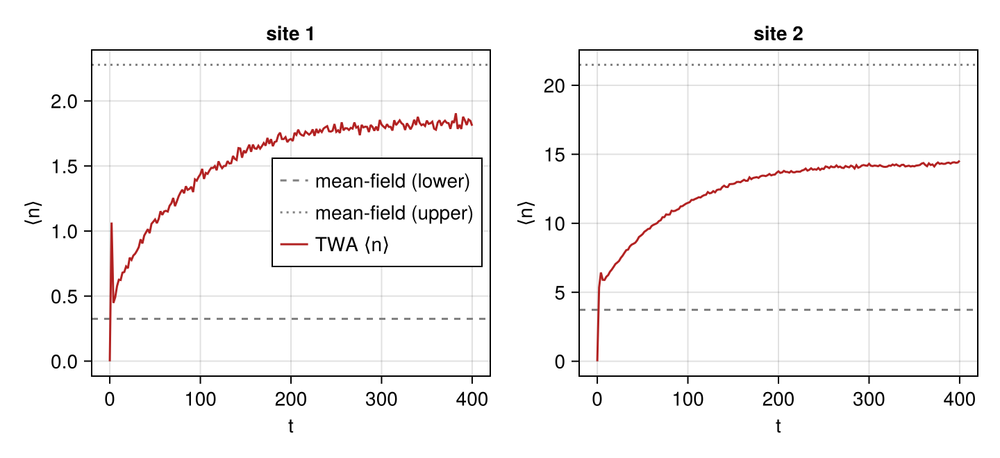
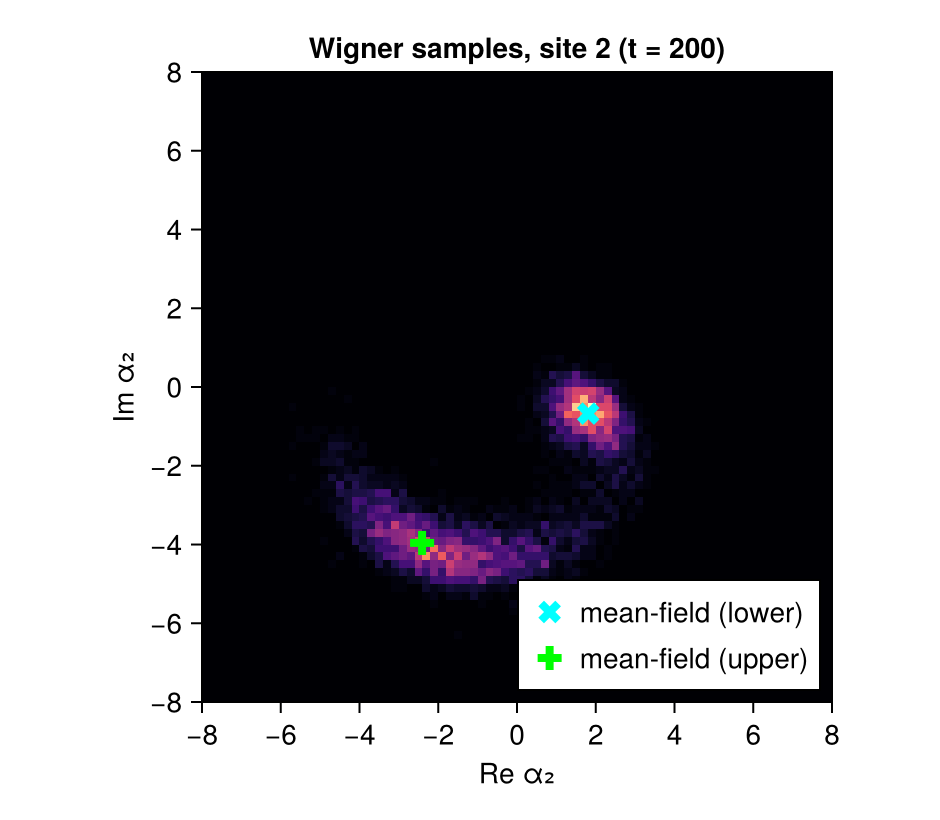

Truncated Wigner for a Driven-Dissipative Bose-Hubbard Dimer
The truncated Wigner approximation (TWA) maps a driven-dissipative quantum system onto an ensemble of stochastic classical trajectories in phase space. It keeps the leading quantum fluctuations that mean-field theory throws away, at the cost of a classical Langevin equation rather than a full master equation. TWA earns its keep precisely when the Hilbert space is too large to integrate directly: here we take two coupled bosonic modes, whose joint Fock space grows as the product of the per-mode cutoffs, in a regime where the drive populates each mode with many photons.
The physical system is a Bose-Hubbard dimer: two lossy Kerr modes $a_1, a_2$ connected by tunneling $J$, with a coherent drive $F$ on the first site. In the frame rotating at the drive frequency (detuning $\Delta$),
\[H = -\Delta \sum_j a_j^\dagger a_j + \frac{U}{2} \sum_j a_j^\dagger a_j^\dagger a_j a_j - J\,(a_1^\dagger a_2 + a_2^\dagger a_1) + F\,(a_1^\dagger + a_1),\]
with single-photon loss $\kappa$ on each site (Lindblad jump operators $L_j = \sqrt{\kappa}\,a_j$). This model is bistable: over a range of drives the mean-field equations have two coexisting stable amplitudes. We will see that mean-field, launched from vacuum, gets trapped on the low-amplitude branch, while TWA reveals the quantum fluctuations that drive switching to the high-amplitude branch. That switching is invisible to any single classical trajectory.
The star of this example is normal_to_symmetric. Wigner-function moments are exactly the symmetrically-ordered operator averages, so the TWA c-number equations follow from one uniform recipe:
rewrite the Heisenberg drift in symmetric order, take the
average, factorize into a product of first moments.
Setup
using SecondQuantizedAlgebra
using Symbolics, SymbolicUtils
h1 = FockSpace(:site1)
h2 = FockSpace(:site2)
h = h1 ⊗ h2
@qnumbers a::Destroy(h, 1) b::Destroy(h, 2)
@variables Δ U J F κ
H = -Δ * (a' * a + b' * b) +
(U / 2) * (a' * a' * a * a + b' * b' * b * b) -
J * (a' * b + b' * a) +
F * (a' + a)\[F a + F a^{\dagger} - J ab^{\dagger} - \Delta a^{\dagger}a - J a^{\dagger}b - \Delta b^{\dagger}b + 0.5 ~ U a^{\dagger}a^{\dagger}aa + 0.5 ~ U b^{\dagger}b^{\dagger}bb\]
The Wigner shift comes out of normal_to_symmetric
The whole approximation hinges on one algebraic fact. The normal-ordered Kerr product, rewritten in symmetric (Weyl) order, picks up a shift:
normal_to_symmetric(a' * a * a)\[-a + a^{\dagger}aa\]
The trailing $-a$ is the Wigner correction. Under TWA it becomes the famous $(|\alpha|^2 - 1)\,\alpha$ term. The same mechanism corrects observables: the occupation operator $a^\dagger a$ maps to $|\alpha|^2 - \tfrac12$,
normal_to_symmetric(a' * a)\[-0.5 + a^{\dagger}a\]
so a physical photon number is recovered from the phase-space cloud as $\langle n_j\rangle = \langle |\alpha_j|^2\rangle - \tfrac12$.
From operators to a c-number drift
The TWA drift for each mode is the Heisenberg-Langevin equation, symmetrized, averaged, then factorized to first order (the mean-field truncation). The factorization $\langle a^\dagger a a\rangle \to \langle a^\dagger\rangle \langle a\rangle \langle a\rangle$ is the one step SecondQuantizedAlgebra does not ship as a built-in, so we spell it out: walk the averaged expression and split every multi-operator moment into a product of single-operator averages.
function factorize_meanfield(expr)
rule = SymbolicUtils.PassThrough(
function (x)
is_average(x) || return nothing
q = undo_average(x)
terms = collect(q.arguments)
length(terms) == 1 || return nothing
ops = first(terms)[1].ops
length(ops) <= 1 && return nothing
return SymbolicUtils.unwrap(prod(average(op) for op in ops))
end,
)
return SymbolicUtils.Postwalk(rule)(SymbolicUtils.unwrap(expr))
endfactorize_meanfield (generic function with 1 method)The loss enters as the standard drift $-\tfrac{\kappa}{2} a_j$ of a lowering operator. The mean-field and TWA drifts differ only by the normal_to_symmetric call:
heisenberg(o) = -1im * commutator(o, H) - (κ / 2) * o
meanfield_drift(o) = factorize_meanfield(average(heisenberg(o)))
twa_drift(o) = factorize_meanfield(average(normal_to_symmetric(heisenberg(o))))
twa_drift(a)\[ \begin{equation} - F ~ \mathtt{im} - 0.5 ~ \langle a \rangle ~ \kappa + J ~ \langle b \rangle ~ \mathtt{im} + \left( U + \Delta \right) ~ \langle a \rangle ~ \mathtt{im} - \langle a \rangle^{2} ~ U ~ \langle a^{\dagger} \rangle ~ \mathtt{im} \end{equation} \]
Subtracting the two confirms the surplus is exactly the Wigner shift $+iU\langle a\rangle$:
Symbolics.simplify(twa_drift(a) - meanfield_drift(a))\[ \begin{equation} \left( U + \Delta \right) ~ \langle a \rangle ~ \mathtt{im} - \langle a \rangle ~ \mathtt{im} ~ \Delta \end{equation} \]
Porting to a ModelingToolkit system
The stochastic variables are the averages themselves. make_time_dependent lifts $\langle a_j\rangle$ into ModelingToolkit unknowns $\langle a_j\rangle(t)$, and the conjugate average $\langle a_j^\dagger\rangle$ becomes $\mathrm{conj}(\langle a_j\rangle(t))$. We keep the unknowns complex and let StochasticDiffEq carry complex state, so no real/imaginary split is needed.
using ModelingToolkit
using ModelingToolkit: t_nounits as t, D_nounits as D
αa = make_time_dependent(average(a), t)
αb = make_time_dependent(average(b), t)\[ \begin{equation} \langle b \rangle\left( t \right) \end{equation} \]
SecondQuantizedAlgebra represents the imaginary unit inside an average as a symbolic constant; fold it to a numeric im, and map the averages to the time-dependent unknowns, so ModelingToolkit sees a plain complex ODE.
function to_rhs(drift)
numeric = Symbolics.substitute(drift, Dict(SymbolicUtils.unwrap(Symbolics.IM) => 1im))
return Symbolics.substitute(
numeric,
Dict(
average(a) => αa, average(b) => αb,
average(a') => conj(αa), average(b') => conj(αb),
),
)
end
eqs = [D(αa) ~ to_rhs(twa_drift(a)), D(αb) ~ to_rhs(twa_drift(b))]\[ \begin{align} \frac{\mathrm{d}}{\mathrm{d}t} ~ \langle a \rangle\left( t \right) &= -\mathit{i} ~ F + \mathit{i} ~ J ~ \langle b \rangle\left( t \right) + \mathit{i} ~ \left( U + \Delta \right) ~ \langle a \rangle\left( t \right) - 0.5 ~ \langle a \rangle\left( t \right) ~ \kappa -\mathit{i} ~ \langle a \rangle\left( t \right)^{2} ~ U ~ \mathrm{conj}\left( \langle a \rangle\left( t \right) \right) \\ \frac{\mathrm{d}}{\mathrm{d}t} ~ \langle b \rangle\left( t \right) &= \mathit{i} ~ J ~ \langle a \rangle\left( t \right) + \mathit{i} ~ \left( U + \Delta \right) ~ \langle b \rangle\left( t \right) - 0.5 ~ \langle b \rangle\left( t \right) ~ \kappa -\mathit{i} ~ \langle b \rangle\left( t \right)^{2} ~ U ~ \mathrm{conj}\left( \langle b \rangle\left( t \right) \right) \end{align} \]
Assemble the (deterministic) drift system. Its generated right-hand side is reused below as the drift of the stochastic problem.
@named twa = System(eqs, t, [αa, αb], [Δ, U, J, F, κ])
twa = mtkcompile(twa)\[ \begin{align} \frac{\mathrm{d}}{\mathrm{d}t} ~ \langle b \rangle\left( t \right) &= \mathit{i} ~ J ~ \langle a \rangle\left( t \right) + \mathit{i} ~ \left( U + \Delta \right) ~ \langle b \rangle\left( t \right) - 0.5 ~ \langle b \rangle\left( t \right) ~ \kappa -\mathit{i} ~ \langle b \rangle\left( t \right)^{2} ~ U ~ \mathrm{conj}\left( \langle b \rangle\left( t \right) \right) \\ \frac{\mathrm{d}}{\mathrm{d}t} ~ \langle a \rangle\left( t \right) &= -\mathit{i} ~ F + \mathit{i} ~ J ~ \langle b \rangle\left( t \right) + \mathit{i} ~ \left( U + \Delta \right) ~ \langle a \rangle\left( t \right) - 0.5 ~ \langle a \rangle\left( t \right) ~ \kappa -\mathit{i} ~ \langle a \rangle\left( t \right)^{2} ~ U ~ \mathrm{conj}\left( \langle a \rangle\left( t \right) \right) \end{align} \]
The noise
Vacuum single-photon loss contributes a diagonal Wigner diffusion. In the complex representation each mode gets an independent complex noise of amplitude $\sqrt{\kappa/2}$. This is the one number fixed by convention rather than by the algebra: it is set so that a bare lossy mode relaxes to the vacuum width $\langle|\alpha|^2\rangle = \tfrac12$, matching the $-\tfrac12$ in the occupation map above.
using OrdinaryDiffEq, StochasticDiffEq
using SymbolicIndexingInterface: getp
getκ = getp(twa, κ)
function noise!(du, u, p, t)
amp = sqrt(getκ(p) / 2)
du[1] = amp
du[2] = amp
return nothing
endnoise! (generic function with 1 method)Mean-field: two coexisting branches
The mean-field limit drops both quantum corrections (the Wigner shift and the noise): it is the deterministic drift built from meanfield_drift, one equation per mode. We integrate it to steady state from two different starts, from vacuum and from a large-amplitude seed.
using Statistics
params = Dict(Δ => 2.0, U => 0.1, J => 0.6, F => 3.0, κ => 1.0)
tspan = (0.0, 400.0)
mf_eqs = [D(αa) ~ to_rhs(meanfield_drift(a)), D(αb) ~ to_rhs(meanfield_drift(b))]
@named mf = System(mf_eqs, t, [αa, αb], [Δ, U, J, F, κ])
mf = mtkcompile(mf)
mfsolve(α0) = solve(ODEProblem(mf, merge(Dict(αa => α0, αb => α0), params), tspan), Tsit5())
αlo = mfsolve(0.0im).u[end] # from vacuum
αhi = mfsolve(5.0 + 0im).u[end] # from a bright seed
(abs2(αlo[2]), abs2(αhi[2])) # site-2 occupation on each branch(3.7306963237434414, 21.486880674065816)Two stable amplitudes coexist for the same parameters. A single classical trajectory, released from vacuum, can only ever find the lower one.
Solving the TWA ensemble
TWA replaces that one trajectory by an ensemble. Each realization starts from a vacuum-sampled initial condition (the Wigner distribution of the vacuum is a complex Gaussian with $\langle|\alpha|^2\rangle = \tfrac12$) and is driven by the loss noise. The drift is reused verbatim from the deterministic problem via SDEFunction.
prob = ODEProblem(twa, merge(Dict(αa => 0.0im, αb => 0.0im), params), tspan)
sdeprob = SDEProblem(SDEFunction(prob.f.f, noise!), prob.u0, tspan, prob.p)
vacuum_start(prob, ctx) = remake(prob; u0 = randn(ComplexF64, 2) ./ sqrt(2))
ntraj = 5_000
saveat = 0.0:2.0:400.0
ensemble = EnsembleProblem(sdeprob; prob_func = vacuum_start)
sim = solve(ensemble, LambaEulerHeun(), EnsembleThreads(); trajectories = ntraj, saveat)Each trajectory is a phase-space sample $(\alpha_1(t), \alpha_2(t))$. Physical occupations are the ensemble means, minus the vacuum $\tfrac12$:
traj = [reduce(hcat, s.u) for s in sim.u]
occ(mode, i) = mean(abs2(traj[k][mode, i]) for k in 1:ntraj) - 0.5
n1_twa = [occ(1, i) for i in eachindex(saveat)]
n2_twa = [occ(2, i) for i in eachindex(saveat)]Occupations: TWA versus the mean-field branches
using CairoMakie
fig = Figure(; size = (720, 330))
for (col, (nt, mode, lab)) in enumerate(((n1_twa, 1, "site 1"), (n2_twa, 2, "site 2")))
ax = Axis(fig[1, col]; xlabel = "t", ylabel = "⟨n⟩", title = lab)
hlines!(ax, [abs2(αlo[mode])]; color = :gray, linestyle = :dash, label = "mean-field (lower)")
hlines!(ax, [abs2(αhi[mode])]; color = :gray, linestyle = :dot, label = "mean-field (upper)")
lines!(ax, collect(saveat), nt; color = :firebrick, label = "TWA ⟨n⟩")
col == 1 && axislegend(ax; position = :rc)
end
fig
Mean-field launched from vacuum sits forever on the lower branch (dashed). The TWA ensemble mean (red) climbs well above it: quantum fluctuations kick a growing fraction of trajectories over the barrier onto the upper branch (dotted), and the ensemble average settles between the two. Nothing in the deterministic dynamics from vacuum could produce this.
The phase-space (Wigner) distribution
Because every trajectory is a phase-space point, the ensemble at the final time is a sampled Wigner quasi-distribution. We bin it with FHist and overlay both mean-field fixed points.
using FHist
re2 = [real(traj[k][2, end]) for k in 1:ntraj]
im2 = [imag(traj[k][2, end]) for k in 1:ntraj]
hist = Hist2D((re2, im2); binedges = (-8:0.2:8, -8:0.2:8))
fig2 = Figure(; size = (470, 410))
ax = Axis(fig2[1, 1]; xlabel = "Re α₂", ylabel = "Im α₂", aspect = 1, title = "Wigner samples, site 2 (t = 200)")
heatmap!(ax, bincenters(hist)..., bincounts(hist); colormap = :magma)
scatter!(ax, [real(αlo[2])], [imag(αlo[2])]; color = :cyan, marker = :xcross, markersize = 16, label = "mean-field (lower)")
scatter!(ax, [real(αhi[2])], [imag(αhi[2])]; color = :lime, marker = :cross, markersize = 16, label = "mean-field (upper)")
axislegend(ax; position = :rb)
fig2
The distribution is unmistakably bimodal: one lobe sits on each mean-field branch, joined by a bridge of trajectories caught mid-switch. This is the picture mean-field cannot draw. A direct master-equation solve would need a Fock cutoff comfortably above the upper-branch occupation on both modes, a joint space of many hundreds of states, whereas TWA needed only classical trajectories.
Every ingredient downstream of the Hamiltonian, the drift, the observable map $\langle n\rangle = \langle|\alpha|^2\rangle - \tfrac12$, and even the sign of the Kerr shift, came out of symmetric ordering plus average, with no hand conversion from operators to c-numbers.
This page was generated using Literate.jl.